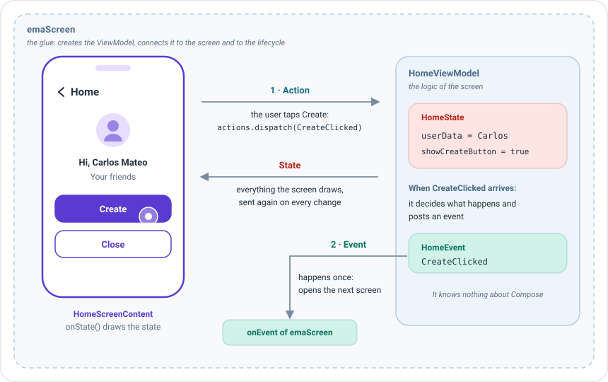
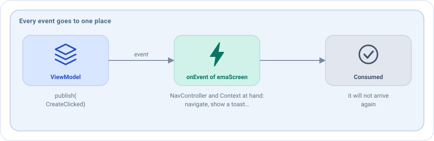
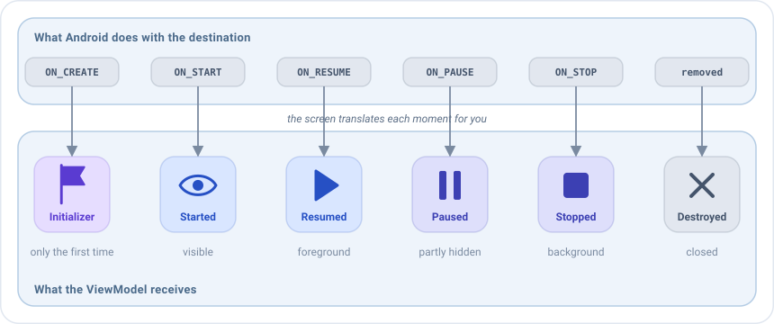
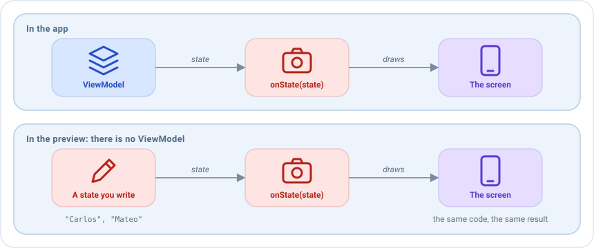

Pantallas en Compose¶
Una pantalla de Emanate reparte el trabajo entre tres piezas, para que cada una tenga una única tarea:
| Pieza | Tarea | Ejemplo |
|---|---|---|
| El ViewModel | Guarda el estado y decide qué pasa cuando el usuario hace algo. No sabe nada de Compose. | HomeViewModel |
El contenido de la pantalla (EmaScreenContent) |
Pinta el estado con Compose y comunica lo que hace el usuario. No guarda datos propios. | HomeScreenContent |
El registro (emaScreen) |
El pegamento. Crea el ViewModel, lo conecta con el contenido y con el ciclo de vida, coloca la pantalla en tu grafo de navegación y recibe sus eventos. | El bloque del NavHost |
La información siempre viaja igual. En la pantalla home del sample, el administrador toca el botón para crear un usuario:

- El usuario toca Create, y el contenido de la pantalla envía la acción
CreateClicked. - El ViewModel decide qué significa eso. Cada vez que cambia su estado, el contenido de la pantalla lo pinta de nuevo.
- Aquí la respuesta es algo puntual: el ViewModel publica el evento
CreateClicked, y elonEventdeemaScreenabre la siguiente pantalla.
La pantalla nunca cambia el estado por sí misma: solo envía acciones y pinta el estado que le da el ViewModel. Por eso el mismo contenido se puede mostrar en una preview, en un test o en una app real sin cambios.
Esta página sigue la vida de una pantalla, desde que se escribe hasta que se usa. Necesitas los artefactos
emanate-android y emanate-compose-android. Para registrar las pantallas en un grafo de Navigation Compose, como en
los ejemplos, necesitas también emanate-compose-android-nav2: los demás artefactos no dependen de ninguna librería de
navegación.
Contenido de la pantalla¶
Esta es la parte que más escribirás: el código Compose de la pantalla. Creas una clase que implementa
EmaScreenContent y rellenas onState, que recibe el estado actual y lo pinta. Cuando el usuario pulsa un botón, no
cambias nada: envías una acción con actions.dispatch(...), y el ViewModel responde con un nuevo estado que hace que
onState se ejecute de nuevo.
class HomeScreenContent : EmaScreenContent<HomeState, HomeAction> {
@Composable
override fun onState(
state: HomeState,
actions: EmaActionDispatcher<HomeAction>
) {
// Pinta el estado. Envía lo que haga el usuario con actions.dispatch(...)
}
}
EmaScreenContent<S, A> recibe el tipo del estado y el tipo de las acciones, y tiene dos miembros:
| Miembro | Propósito |
|---|---|
onState(state, actions) |
Obligatorio. Pinta el estado. Es un @Composable. |
onBack(state): A? |
La acción a enviar cuando se pulsa atrás, o null. Mira Botón atrás. Opcional. |
El contenido de la pantalla no recibe los eventos: se gestionan donde se registra la pantalla, como se explica en Gestionar los eventos.
Mantén el contenido de la pantalla sin estado: es una descripción sin estado, creada una vez por pantalla. Todo lo que deba sobrevivir pertenece al estado del ViewModel.
Registrar la pantalla¶
Un contenido de pantalla por sí solo es solo una descripción: nada lo muestra todavía. Registrarlo significa añadirlo
como destino de tu NavHost, como harías con el composable(...) de Compose Navigation, pero con emaScreen, que
además crea el ViewModel y lo conecta todo. Aquí también decides qué pasa cuando el ViewModel envía un evento, como
navegar a otra pantalla. emaScreen está en el artefacto emanate-compose-android-nav2. Si usas otra navegación, coloca
la pantalla con EmaScreen, que está en emanate-compose-android.
NavHost(
navController = navController,
startDestination = HomeScreenContent::class.routeId
) {
emaScreen(
screenContent = HomeScreenContent(),
viewModel = { get<HomeViewModel>() },
onEvent = { navigator.handleHomeEvent(it) { /* mostrar el mensaje */ } }
)
}
| Parámetro | Propósito |
|---|---|
screenContent |
El contenido de la pantalla. |
viewModel |
Una lambda que crea el ViewModel. Se llama una vez, cuando se abre la pantalla, y recibe el EmaStateStore de la pantalla para un backup. Mira Inyección de dependencias. |
onEvent |
Recibe todos los eventos de la pantalla. Mira Gestionar los eventos. |
routeId |
La ruta. Por defecto ScreenContent::class.routeId, que es única por clase. |
initializerSupport |
Cómo leer el inicializador de la ruta. Mira Navegación. |
transitionAnimation |
EmaAnimTransition(enterTransition, exitTransition, popEnterTransition, popExitTransition). Las transiciones pop usan por defecto las de entrada y salida. |
Los parámetros que más usarás son los tres primeros. El resto tienen un valor por defecto, así que añádelos solo cuando los necesites. Por ejemplo, una pantalla que entra deslizándose desde la derecha:
emaScreen(
screenContent = ProfileCreationScreenContent(),
viewModel = { get<ProfileCreationViewModel>() },
transitionAnimation = EmaAnimTransition(
enterTransition = { slideInHorizontally { width -> width } },
exitTransition = { slideOutHorizontally { width -> width } }
),
onEvent = { navigator.handleProfileCreationEvent(it) }
)
Mostrar una pantalla como diálogo¶
Algunas pantallas se muestran sobre la anterior, en un diálogo, en lugar de sustituirla. Regístralas con emaDialog en
lugar de emaScreen. Todo lo demás es igual: el contenido de la pantalla, el ViewModel, los eventos y el inicializador
de la ruta. Solo cambian las transiciones, ya que un diálogo no tiene, por dialogProperties, las DialogProperties de
Compose:
emaDialog(
screenContent = FilterScreenContent(),
viewModel = { get<FilterViewModel>() },
dialogProperties = DialogProperties(usePlatformDefaultWidth = false),
onEvent = { navigator.handleFilterEvent(it) }
)
La abres como cualquier otra pantalla, con navController.navigate(FilterScreenContent::class.routeId).
Este es un destino del grafo que parece un diálogo. Para un diálogo pequeño dentro de una pantalla, como una confirmación, usa el estado: mira Diálogos.
Gestionar los eventos¶
Un evento es algo que debe ocurrir una vez, como mostrar un toast o abrir otra pantalla, a
diferencia del estado, que siempre está ahí. Todos los eventos de la pantalla llegan a un único sitio: la lambda
onEvent de emaScreen. Cuando termina, el evento queda consumido y no volverá a llegar.

onEvent se escribe en el grafo, dentro de tu activity o composable, así que tienes a mano todo lo que un evento pueda
necesitar: el NavController o el navigator para navegar, y el Context para mostrar un toast o abrir otra app.
val context = LocalContext.current
NavHost(navController, startDestination = ProfileCreationScreenContent::class.routeId) {
emaScreen(
screenContent = ProfileCreationScreenContent(),
viewModel = { get<ProfileCreationViewModel>() },
onEvent = { event ->
when (event) {
ProfileCreationEvent.DialogConfirmationAccepted -> navController.navigateBack()
is ProfileCreationEvent.ProfileSaved ->
Toast.makeText(context, "Perfil guardado", Toast.LENGTH_SHORT).show()
}
}
)
}
Como todos los eventos llegan al mismo when, el compilador te avisa cuando un evento nuevo no está gestionado. Cuando
el when crece, muévelo a una función de tu navigator, como hace el sample con
navigator.handleHomeEvent(it).
onEvent debe terminar rápido: los siguientes eventos esperan por él. Navegar o mostrar un toast es inmediato. Para algo
que tarda, como un snackbar, lánzalo en un scope de corrutinas tuyo:
val scope = rememberCoroutineScope()
val snackbarHostState = remember { SnackbarHostState() }
NavHost(navController, startDestination = ProfileCreationScreenContent::class.routeId) {
emaScreen(
screenContent = ProfileCreationScreenContent(),
viewModel = { get<ProfileCreationViewModel>() },
onEvent = { event ->
when (event) {
is ProfileCreationEvent.ProfileSaved -> scope.launch { snackbarHostState.showSnackbar("Guardado") }
ProfileCreationEvent.DialogConfirmationAccepted -> navController.navigateBack()
}
}
)
}
Ciclo de vida¶
Una pantalla pasa por momentos: se crea, aparece, el usuario se va a otra app, vuelve, se destruye. El ViewModel a menudo necesita saberlo, por ejemplo para cargar datos cuando aparece la pantalla o para dejar de escuchar algo cuando se pausa. No tienes que observar el ciclo de vida tú mismo: la pantalla lo hace y pasa cada momento al ViewModel.

La pantalla conecta el ViewModel con el ciclo de vida de su destino:
| Evento del ciclo de vida | El ViewModel recibe |
|---|---|
ON_CREATE, la primera vez |
El EmaInitializer de la pantalla |
ON_START |
EmaLifecycle.Started |
ON_RESUME |
EmaLifecycle.Resumed |
ON_PAUSE |
EmaLifecycle.Paused |
ON_STOP |
EmaLifecycle.Stopped |
| La pantalla sale de la composición | EmaLifecycle.Paused y EmaLifecycle.Stopped |
| Se elimina el destino | EmaLifecycle.Destroyed, y se cierra |
El estado se recoge con collectAsStateWithLifecycle y los eventos mientras el ciclo de vida está en STARTED.
Previews¶
El @Preview de Android Studio dibuja un composable sin ejecutar la app, lo que hace mucho más rápido diseñar la UI.
Pero una preview no puede crear un ViewModel real, así que le das un estado a mano y ves cómo queda la pantalla con él.
Escribir una preview por cada estado interesante (vacío, cargando, error...) es una forma barata de comprobarlos todos.

Dentro de la preview del IDE no hay ViewModel, así que llama a onState directamente con un estado y un dispatcher
vacío:
@Preview
@Composable
private fun PreviewNormal() {
EmaSampleTheme {
ProfileCreationScreenContent().onState(
state = ProfileCreationState("Carlos", "Mateo"),
actions = EmaActionDispatcher.EMPTY
)
}
}
Usar una pantalla sin grafo de navegación¶
emaScreen necesita un NavHost. Pero no todas las apps usan Navigation Compose: una activity puede mostrar una sola
pantalla, o puede que quieras una pantalla de Emanate como simple parte de un layout mayor, como un contador dentro
de una página. Para esos casos existe EmaScreen, un composable que colocas donde quieras, como un Text o una
Column.
EmaScreen es en realidad lo que emaScreen dibuja dentro de cada destino, así que hace el mismo trabajo: crea el
ViewModel, lo conecta con el ciclo de vida, pinta el estado con el contenido de la pantalla, envía las acciones del botón
atrás y pasa cada evento a onEvent. Lo único que falta es el grafo.
Una pantalla en una activity¶
El caso más habitual: una activity que muestra una pantalla de Emanate y nada más. Imagina un contador con un botón +
que avisa al usuario cuando llega a 10.
class CounterActivity : ComponentActivity() {
override fun onCreate(savedInstanceState: Bundle?) {
super.onCreate(savedInstanceState)
setContent {
EmaSampleTheme {
EmaScreen(
vm = { CounterViewModel() },
screenContent = CounterScreenContent(),
onEvent = { event ->
when (event) {
CounterEvent.LimitReached ->
Toast.makeText(this, "Has llegado a 10", Toast.LENGTH_SHORT).show()
}
}
)
}
}
}
}
Los parámetros son los de emaScreen, con nombres más cortos:
| Parámetro | Propósito |
|---|---|
vm |
Una lambda que crea el ViewModel. Se llama solo la primera vez, como en emaScreen. |
screenContent |
El contenido de la pantalla. |
onEvent |
Recibe todos los eventos de la pantalla, como en Gestionar los eventos. |
initializer |
El inicializador de la pantalla. Aquí no hay una ruta de la que leerlo, así que lo pasas directamente. Opcional. |
previewRenderState |
El estado a pintar en una preview. Mira Previews de un layout mayor. Opcional. |
Por ejemplo, para abrir el contador empezando en 5, pasa tú el inicializador:
EmaScreen(
initializer = CounterInitializer(start = 5),
vm = { CounterViewModel() },
screenContent = CounterScreenContent(),
onEvent = { /* ... */ }
)
Una pantalla dentro de un layout mayor¶
Como EmaScreen es un composable, puede ser una pieza de una página. Aquí el contador está bajo un título y sobre un
botón que no forma parte de él:
@Composable
fun DashboardPage(onSettingsClicked: () -> Unit) {
Column {
Text("Dashboard", style = MaterialTheme.typography.headlineMedium)
EmaScreen(
vm = { CounterViewModel() },
screenContent = CounterScreenContent(),
onEvent = { /* ... */ }
)
Button(onClick = onSettingsClicked) { Text("Settings") }
}
}
El ViewModel vive tanto como la activity (o el destino del grafo) que contiene la página, no tanto como el composable. Si
el contador está dentro de un if y desaparece, su ViewModel recibe Paused y Stopped, y conserva su estado: cuando
el contador vuelve a aparecer, muestra el mismo número.
Previews de un layout mayor¶
previewRenderState es el estado que muestra la pantalla en lugar del real cuando se dibuja en la preview de
Android Studio:
| Dónde se dibuja la pantalla | Qué muestra |
|---|---|
| En la app, en un dispositivo | El estado real, el del ViewModel. previewRenderState se ignora. |
| En la preview de Android Studio | previewRenderState. Ni siquiera se crea el ViewModel. |
Lo necesitas porque una preview no puede crear el ViewModel, así que sin previewRenderState la pantalla no
tiene estado que pintar y su espacio queda vacío. Con él, ves la página completa tal como se verá:
@Composable
fun DashboardPage() {
Column {
Text("Dashboard")
EmaScreen(
vm = { CounterViewModel() },
screenContent = CounterScreenContent(),
onEvent = { /* ... */ },
// Solo para la preview: la app muestra la cuenta real del ViewModel
previewRenderState = CounterState(count = 3)
)
}
}
@Preview
@Composable
private fun PreviewDashboard() {
// El título y un contador con el número 3
DashboardPage()
}